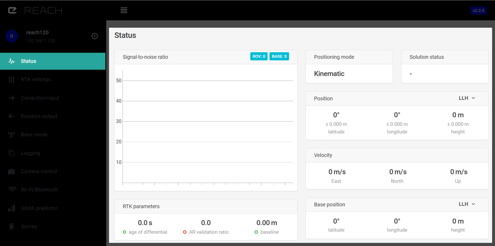
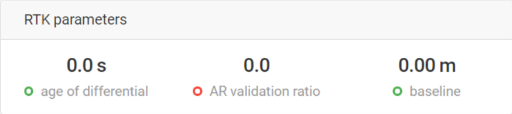
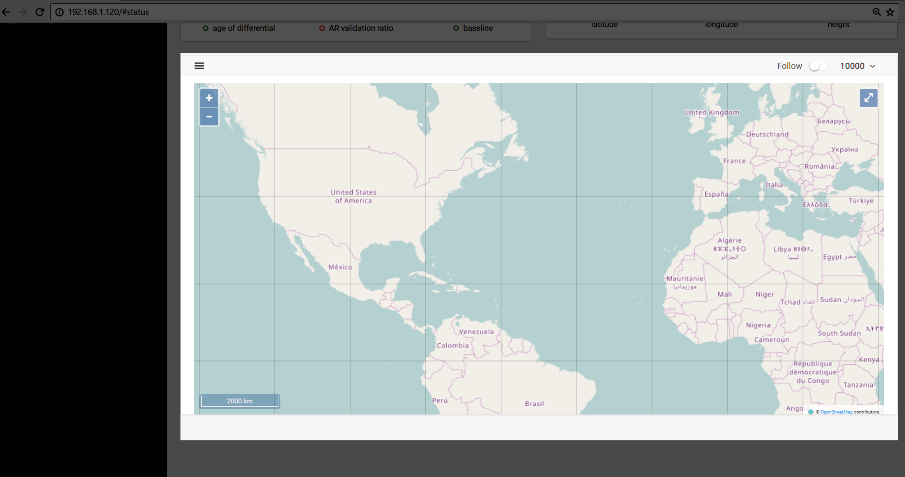
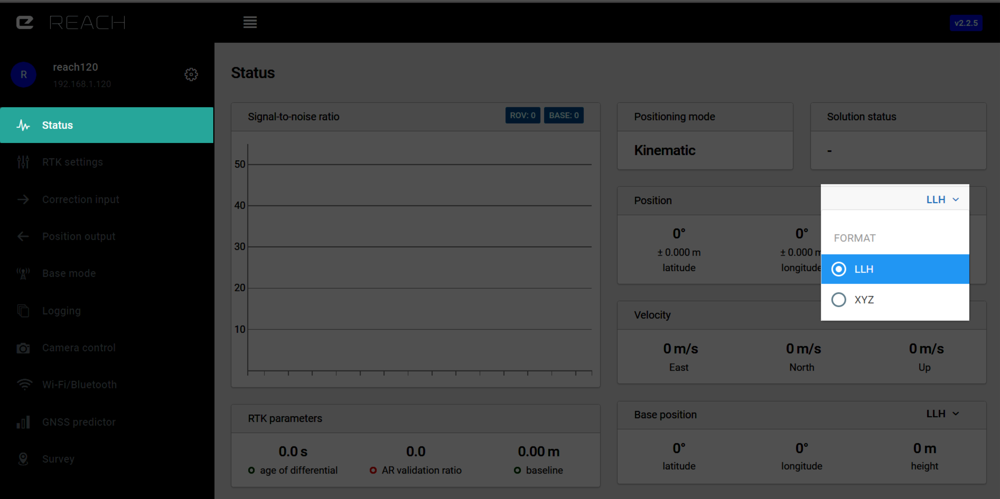

Statut
Il s'agit du tableau de bord principal récapitulant toutes les informations concernant la position ou la réception satellite.
Graphique du rapport signal sur bruit du satellite (SNR)¶

Le positionnement RTK requiert une excellente réception des satellites GNSS. Le rapport signal sur bruit (SNR pour Signal to Noise Ratio en anglais) est le premier indicateur de qualité de réception. Le graphique affiche l'ensemble des satellites qui peuvent s'inscrire sur votre écran avec leur rapport signal sur bruit correspondant (SNR). Les données sont mises à jours en temps réel.
| Legend | |
|---|---|
| R | satellite Glonass |
| G | satellite GPS |
| S | satellite SBAS |
| E | satellite Galileo |
| J | satellite QZSS |
| B | satellite Beidou |
Quand le rapport signal sur bruit du satellite est au dessus de 45, il s'affiche en vert. Les barres grises indiquent le SNR de la station fixe (la base). L'objectif est d'obtenir autant de signaux satellites dans la “zone verte“ que possible. Cela permettra des mesures précises et une résolution des ambiguités (Fix) rapides. Au dessus du graphique du rapport signal sur bruit vous pouvez voir des indicateurs concernant le nombre de satellites visibles pour la station fixe (base) ou le récepteur mobile (rover).
Paramètres RTK¶

Différence d'age (Age of differential)¶
Dans le cas d'un flux de correction régulier, l'indicateur de différence d'age (age of differential) rend compte de la latence du lien. Il est calculé en soustrayant l'heure de génération du message à l'heure actuel du récepteur. C'est une outil essentiel pour détecter les problèmes de connectivités.
Indice de validté de la résolution d'ambiguité (AR validation ratio)¶
C'est le résultat d'un calcul de rapport effectué en évaluant la solution "Fix" potentielle, cela indique de combien de fois la solution courante est meilleure que la suivante. Si ce nombre est plus grand que 3 le module Reach considère que la solution RTK est figée (Fixed).
Référentiel (Baseline)¶
Le référentiel est la distance entre le récepteur mobile (rover) et la station fixe (base). Il doit être en dessous de 10km, s'il est au délà vous pouvez être sujet à temps de résolution vers une solution "Fix" plus importante et une précision moindre sur la précision. La précision diminue de 1mm à chaque km supplémentaire dans la distance au référentiel (baseline).
Carte¶
Une carte intégrée est utilisée afin d'afficher votre position actuelle. Les couches de la cartes sont fournies par OpenStreetMap.

Fonctionalités disponibles de la carte:
- Dernier point (Last point): zoom la carte sur le dernier point.
- Effacer la carte (Clear map): supprimer tous les points de la carte.
- Cacher l'arrière-plan (hide background): supprime la couche OSM.
- Suivre (Follow): garde le centrage sur le dernier point.
- Selection du nombre de points à afficher: 100, 1000,10000.
| Significaiton de la couleur du point | |
|---|---|
| Vert | RTK Fix |
| Jaune | RTK Float |
| Rouge | Single |
Coordonnées¶
La Latitude et la Longitude WGS84 ainsi que l'altitude ellipsoïdale sont affichées dans l'onglet "status". Le format d'affichage des coordonnées peut être changé en ECEF XYZ.

Statut de la solution (Solution status)¶
"-" signifie que le logiciel ne dispose d'aucune information à tratier. Soit trop peu de temps s'est écoulé, soit l'antenne n'est pas disposée correctement.
Single signifie que le récepteur mobile (rover) a trouvé une solution utilisant son propre récepteur et que les corrections de la station fixe (base) n'ont pas été utilisées. Paramétrer le mode de positionnement (positioning mode) à "Single" aboutira également à ce statut. La précision dans ce mode autonome (standalone) est de l'ordre du mètre.
Float signifie que les corrections de la station fixe (base) sont désormais prises en compte et que le positionnement s'effectue en relatif par rapport aux coordonnées de la station fixe (base), mais que la résolution de l'ambiguïté à l'entier adéquat (integer ambiguity) n'est pas finie. L'ordre de grandeur de la précision en mode "Float" est en dessous du mètre.
Fix signifie que le postionnement est relatif par rapport à la station fixe (base) et que la résolution de l'ambiguïté à l'entier adéquat est validée. La précision en mode autonome est de l'ordre du centimètre.